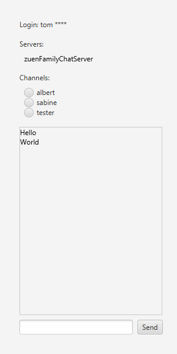

Storyboard SeppelChat
SeppelChat
Start: Test a family chat server and an SE chat server and clients attached to one of those or to both.
Step 1: First clean old json data
Step 3: start three or four clients
Step 4: Tom opens channel with Sabine and sends a message via the family server not seen by Albert.
Check: Normal termination true